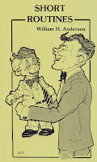

Short Routines; Long on Laughter!
7/3/2010
{kind=link}

Because of the larger size of this book, and limited supply, I no longer offer SHORT ROUTINES through http://maherbookstore.blogspot.com/ but I'd be happy to sell you a copy direct. Filled with 45 comedy dialogues, this book has been a favorite best seller with ventriloquists since the day it was published by Maher Studios. Authored by William Andersen, each entertaining ventriloquist script is 1-3 minutes in length, perfect for introductions, Emcee bits, walk-around acts, fillers, encores, etc.
Combine several of these laugh-filled scripts for a complete act! A wide variety of subjects; something for every performer and performance. Timeless classic comedy for the ventriloquist entertainer of any age for all ages. 55 pages; 45 routines! $8.95 postpaid. To Purchase now, Click Here !
Dialogue Titles:
1. M.C. Bits
2. What Kind of a Dog is it?
3. A Trick Dog
4. My Big Dog
5. A Pet String
6. Mean to the Cat
7. The Cat and Rat Scheme
8. Lend Me Some Money?
9. Easy Money Scheme
10. Be A Ventrickolist
11. The Raffle
12. I Can Say It Backwards
13. I Give Up, What Is It?
14. On A Diet
15. Father's Job
16. I'll Spank You
17. We're Going On TV.
18. How Old Are You?
19. Uncle's Operation
20. Figure on the Beach
21 Johnny On the Phone
22. Boundaries
23. I'm the Boss
24. A Frog For Little Sister
25. The Singer
26. Gone Down In History
27. Baby Talk
28. Crossword Puzzle
29. My Girl Is a Twin
30. A.C. or D.C.?
31. Baby Swallowed a Quarter
32. What Are We Going to Do?
33. Can You Answer Your Own Question?
34. My Dream
35. The King's English
36. The Beatitudes
37. No Ticket
38. The Life Guard
39. Japanese Pullover
40. Airplanes Are Poison
41. Shape of the World
42. The Ring Story
43. Important Family Members
44. I'd Like To Say
45. The Pastor's Job
Forty-five routines - less than 20 cents each and FREE shipping!
A deal unmatched!